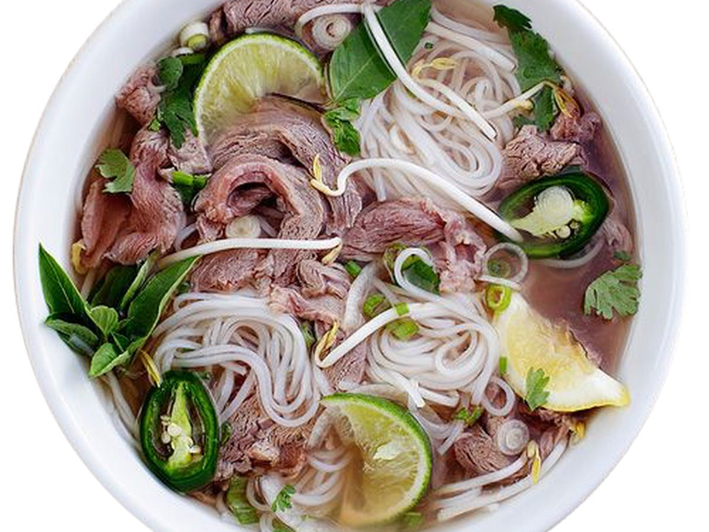

Pho Recipe

Description
Pho is a popular Vietnamese noodle soup. It is filled with aromatic and complex flavors. The secret key is the broth.
Pho has several regional recipes style. Northern, central, and southern Vietnam all have their unique twists.
Ingredients
- Marrow bones and Meaty bones
- Thinly sliced raw meat
- Yellow Onions
- Whole garlic
- Fresh ginger
- Whole spices: star anise, cloves, cinnamon sticks, black cardamom pods, fennel seeds, coriander seeds
- Salt
- Fish sauce
- Sugar
Steps
- Divide the bones into two large pots. Cover with cold water.
- Bring to a boil over heat and simmer for 15 - 20 mins.
- Drain and rinse the bones with water.
- Roast the bones in oven preheat to 450 degrees F.
- Transfer the bones, onion, garlic, and ginger to the roasting pans or rimmed baking sheets.
- Roast for 30 minutes before gently tossing the bones, and roasting for an additional 15-30 minutes more.